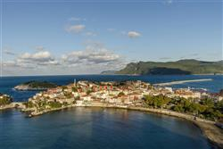
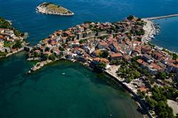
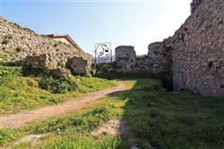
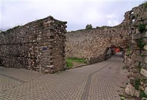
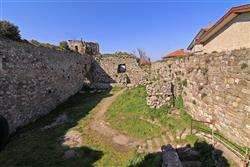
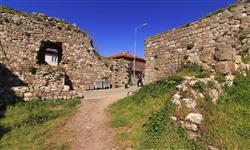
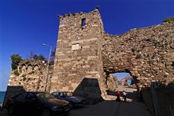
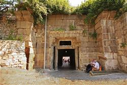
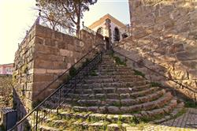
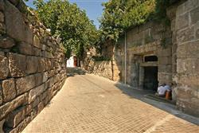

Amasra Kalesi Hakkında
Amasra Kalesi, Bartın'ın Amasra ilçesindeki bir kaledir.
Romalılar tarafından inşa edildi ve sonrasında sırasıyla Bizanslılar, Cenevizliler ve Osmanlılar tarafından restore edildi.
UNESCO, 2013'te kaleyi Dünya Mirası Geçici Listesi'ne ekledi.
Amasra Kalesi Tarihi
Amasra'nın şehir merkezinde, sahil kenarında bulunan Amasra Kalesi, Zindan ve Sormagir Kalesi olarak iki ana yapıdan oluşmaktadır.
Kale, stratejik konumu ve şehri koruması amacıyla Roma döneminde inşa edilmiş ve Bizans, Ceneviz, Osmanlılar dönemlerinde çeşitli onarımlardan geçirilerek kullanılmıştır.
Cenevizliler döneminde de kullanılan Amasra Kalesi 14. ve 15. yüzyıllarda ciddi onarımlar görmüştür.
Fatih Sultan Mehmet’in Amasra’ya Hayranlığı
3. yüzyılda Cenevizliler’in elinde olan Amasra’ya Fatih Sultan Mehmet 1460’ta bir sefer düzenler ve şehre uzaktan bakıp o meşhur sözünü söyler;
“Lala, lala!, çeşm-i cihan bu m’ola”
ve kaleye haber göndererek “Bu kadar güzel bir yere zarar vererek almak istemem kalenin anahtarını bana getiriniz.” der ve kale komutanı bunun üzerine teslim olur.
Pers Prensesi Amastris’in kaderi Büyük İskender’in Pers’leri mağlup etmesi ve prensesi esir almasıyla tamamen değişiyor. İskender prensesi ordu komutanı Craterus ile evlendiriyor. Ancak kısa süre sonra Craterus Amastris’i bırakıyor. Zaten istemediği bir evlilik yapan prenses İskender’in siyasi çıkarları için farklı kişilerle evlendiriyor. Bu evliliklerden kocaman mutsuz bir hayatı ve iki evladı oluyor. Prensesi yanında tutmak istemeyen son eşi prensesi o zamanki ismiyle Sesamos olan Amasra’ya gönderiyor. Büyük yorgunluklar ve umutsuzluklarla gittiği kente görür görmez hayran kalan prenses kente kendi ismini verip kenti yeniden imar ettiriyor ve güzelliği dillere destan Amasra Kalesi’ni yaptırıyor. Kent ile ilgilendikçe kendine göre yenilikler yaptıkça mutsuzluğunu unutuyor, hayata tutunmaya başlıyor. Bunu fark ettikçe kente dört elle sarılıyor Amastris. Bir süre sonra burayı merkez haline getirdiği dört kentlik bir birlik kuruyor. Birlik giderek güçleniyor ve Amastris’te gücünün farkına varıyor. Birine bağlı olmadan kendine başına kazandığı bir zafer oluyor bu birlik. Hayata yeniden umutla ve ilk defa kendine olan büyük bir özgüvenle bakan prensesin birliği hayatı oluveriyor. Ama hayat ne yazık ki bu hikayenin burada bitmesine izin vermiyor. Birliğin büyüyüp güçlenmesi prensesin oğullarının dikkatini çekiyor, ileride kendilerine sorun oluşturabileceği düşüncesiyle annelerini öldürmeye ve birliği dağıtmaya karar veriyorlar. Bir gece annelerine gidiyorlar. Prenses olacaklardan habersiz birlikten, yaptıklarından ve yapacaklarından ismini ve verdiği ve tutkunu olduğu kentten büyük bir hevesle bahsederken çocuklardan biri annesini boğarak öldürüyor. Amastris’in son eşi ise sözde eşinin intikamını almak için prensesin oğullarına suikast düzenliyor ve bir bir süre sonra prensesin oğulları da öldürülüyor. Ve Amasra’nın da içinde bulunan birlik prensesin son eşine kalıyor.
|  |  |  |  |  |
|  |  |  |  |  |